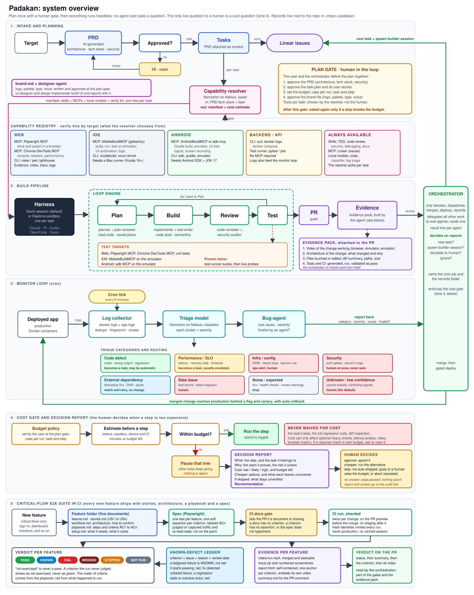

Padakan Blueprint
Padakan is a Claude Code plugin that lets coding agents plan, build, verify and ship on their own, and lets a change reach production only once the system has proven it safe. This page walks through the architecture and the plugin plan, and ends with the decisions that unblock the build.
- Human gates
- 1 up front, then cost questions only
- Sub-agents
- 14, none can call another
- Commands
- 11 under
/padakan: - Sandbox providers
- 3: daytona, devin, local
- Settings
- 49 variables, all in
.env - Built today
- docs, diagrams, 3 templates
- Orchestrator and plugin wiring
- Deterministic trust checks
- Agents and sandboxes
- Where a human acts
- Records, evidence, OKF documents
- External services
- Escalation and rollback
Trust lives in the system around the agent
Getting a plausible change from an agent is solved. Shipping it without a human reading it is the open problem, and it is a trust problem.
The agent is a black box
Any agent can be plugged in. None of the confidence comes from it; it comes from the checks around it.
Unclear means a human
When a check does not clearly pass, the work is escalated as a ticket. The system never guesses.
One human gate
The human approves the plan once. After that the only question ever asked is a cost question.
The orchestrator only decides
It decides, dispatches, merges, deploys and records. Sub-agents do everything else.
Never trust a report
Every claim is re-checked at its source: the remote commit, the test output, CI, the video.
Code decides what ships
Whether a change may ship is decided by rules and scripts, never by a model's opinion.
One open knowledge format
Every document an agent writes is an Open Knowledge Format document, readable by any agent or human.
Next: 02 · Five lanes
Plan once, build in a loop, watch production, gate the cost, prove features in CI
The full system diagram. It scrolls sideways; open diagrams/system-overview.svg for full size.

| Lane | What happens |
|---|---|
| 1 · Intake and planning | Target, PRD, plan gate (human), tasks and Linear issues, capability resolver, one manifest per task |
| 2 · Build pipeline | One tree per task, loop engine (plan, build, review, test), verification gates, PR, evidence pack, orchestrator decision, gated deploy |
| 3 · Monitor loop | Cron tick, log collector, triage model, bug-agent, report, a new task and a new tree |
| 4 · Cost gate | Estimate before a costly step; over budget, that tree pauses and the human gets a decision report |
| 5 · Critical-flow e2e in CI | Five documents and a spec per feature, a CI docs gate, an e2e run twice per change, the verdict on the PR |
The orchestrator reads one line per agent
Every agent gets one brief, writes its full output to its own file, and returns one short line plus a path. That keeps the orchestrator's context small over long runs.
| Agent | Job | Returns |
|---|---|---|
planner | PRD, user stories, task plan | PLAN=<path> TASKS=<n> |
capability-resolver | tools per task and their cost estimate | MANIFEST=<path> COST=<usd> |
test-writer | the tests that prove a task's acceptance criteria | TESTS=<paths> ACS=<n> |
tree-operator | plant, attach, brief, poll, retire a tree | TREE=<id> CI= PR= ACS= EVIDENCE= BLOCKED= |
verifier | re-check claims, run the core/ checks | VERDICT=PASS|FAIL CHECKS=<path> |
evidence-builder | the four-item evidence pack and report | PACK=<path> ITEMS=4/4 |
bug-agent | one monitor tick: clusters, root cause, fixable by an agent? | CLUSTERS=<n> FIXABLE=<keys> |
report-writer | the cost decision report | DECISION=<path> |
Next: 04 · The build pipeline
A change ships when it is proven, not when the agent says it is done
Any task, a feature or a fix, runs the same path. The loop inside the tree is the agent's business; the gates after it are deterministic.
Proven twice
The task's tests pass in the suite, and every acceptance criterion is proven live against the running app with the verify kit. unproven is never a pass.
No regressions
The full suite stays green, and the critical-flow e2e suite is not FAIL, BROKEN or STOPPED.
Diff inspection
Within the size and file caps from .env (blast radius from Entire Graph when enabled), no protected path, no secret, no unapproved dependency change.
Evidence pack
Video of the change working, architecture of the change, files touched (from git), tests and CI. Each item is re-checked; a missing one is a failed check.
Once up front, then only when money is at stake
Agents never ask questions. Anything uncertain is decided by rule or escalated as a ticket that nothing waits on.
Six approvals
- PRD: architecture, tech stack, security
- Task plan and user stories
- Each task's capability manifest
- Budget caps per run, issue and step
brand.md: logo, palette, type, voice- Connect the repo to Entire for search? Asked once, only when Entire is enabled
A decision report
- What the step is and its issue
- Why: the claim it proves, the risk it covers
- Cost range and budget left
- Cheaper options and what each leaves uncovered
- What stays unverified if skipped
- A recommendation
Five choices
Approve, run the cheaper option, skip, raise the budget, or abort. No answer keeps the tree paused and spends nothing.
Never waived for cost: the task's tests, the regression suite and diff inspection. A skipped optional check blocks auto-deploy.
An agent with a question about a feature asks Entire first (past sessions for intent, the graph for code), then takes the conservative choice and records it, or reports BLOCKED=<reason>.
Next: 06 · A tree's life
One sandbox per task, from plant to retire
A tree is one sandbox with one repo, one branch and its own signed-in agent, watched in herdr. tree-operator runs these steps through the orchestrator/ scripts.
| Provider | What a tree is | Use |
|---|---|---|
| daytona default | Linux container from a baked snapshot: Claude Code, herdr, Entire, Playwright, gh; no secrets in the image | web and backend work |
| devin | a Devin session in Devin's own cloud VM, driven only through the Devin API; no herdr or other agent inside | parallel work, with Devin as the agent |
| local | a git worktree on the orchestrator's machine | development, and the Mac host for iOS and Android device probes |
Next: 07 · The plugin on disk
Three layers: steps, sandboxes, trust checks
The dot shows the class. The tag says whether it exists today. The buttons dim everything else; "Build path" lights what one /padakan:build touches.
- Padakan/The repo root is the plugin.
- .claude-plugin/2 files
plugin.jsonand a localmarketplace.json. planned - CLAUDE.mdThe orchestrator's rules: decide, dispatch, merge, deploy, record; delegate the rest. planned
- .env.exampleAll 49 settings, documented. Never holds values. planned
- commands/11onboard · plan · build · watch · decide · feature · evidence · status · replay · pause · rollback. Thin: each follows the scripts. planned
- agents/14One file per sub-agent. None has the Task tool. planned
- skills/13okf · no-questions · cost-gate · escalation · entire-context · feature-docs · e2e-playbook · evidence-pack · triage-categories · verify-web · verify-ios · verify-android · verify-backend. planned
- hooks/hooks.jsonBlocks questions except the cost gate, guards protected paths and secrets, writes the audit. planned
- orchestrator/One script per lifecycle step, run by agents so their output stays out of the orchestrator. planned
- lib/4env.mjs (load order, validation) · records.mjs (records resolver) · herdr.mjs · log.mjs.
- plant · attach · brief · poll4Start a tree and drive its agent.
- verify · evidence · merge · retire4Prove the result, ship it, close the tree.
- tick · doctor · status · ls · recycle5Monitor tick, environment checks, state, rescue.
- bin/2
padakan <step>andpadakan-run(headless outer loop for CI). planned - sandboxes/A gateway, a shared contract, and one folder per provider, chosen in
.env. planned- index.mjs · contract.mjs2Load the provider, write handles, filter secrets.
- daytona/provider.mjs · doctor.mjs · snapshot/Dockerfile · remote/ (bootstrap, tree CLAUDE.md blocks, record brief).
- devin/provider.mjs for Devin API sessions.
- local/provider.mjs for git worktrees and the Mac device host.
- core/Deterministic and unit-tested. No model decides here. planned
- gates · diffcheck2The verification gates and diff inspection.
- deploy · audit · cost · ledger4Gated deploy, hash-chained audit, budget, known defects.
- okf · docs-gate · report3OKF validation, the CI docs gate, the evidence report.
- entire · models · resolver · triage · collect-logs5Entire wrapper, the Nebius client, schema-validated model output, log clusters.
- harness/3claude · devin · openai-compat.
- schemas/ · registry/JSON Schemas for every result; the capability catalog and triage categories. planned
- templates/3 todayevidence-report.md · evidence-report.html · brand.md; brief, decision report, record and feature docs to come. exists
- ci/ · test/CI templates (docs gate, e2e twice per change, cron);
node --testwith mock daytona and herdr CLIs. planned - documentation/tech_docs (architecture, plugin plan, diagrams, this page) · infrastructure (TOOLS.md). exists
Next: 08 · The records folder
Everything that happened, next to the repo, as an OKF bundle
Named in .env (default <repo>-padakan). Never committed to the repo. The orchestrator writes the shared files; each agent writes only its own.
- <repo>-padakan/One OKF bundle per project.
- .envThis project's settings and credentials; survives plugin updates.
- brand.md · plan/What the human approved at the plan gate.
- state.jsonResume point after a restart or compaction.
- tasks/<KEY>/task · manifest · brief · diff · checks/ · evidence/ · record.md · deploy · entire · logs/<agent>.md
- sandboxes/<id>.jsonOne handle per live tree.
- decisions/Cost decision reports and the answers.
- audit/ · cost/ · ledger/Hash-chained audit, spend ledger, known defects (machine data).
- monitor/<tick>/Clusters, triage and bug-agent reports per cron tick.
- index.md · log.mdOKF index (one row per task) and the human-readable history.
Every agent document is OKF
Markdown with YAML frontmatter, one concept per file, the path as its identity, markdown links between concepts. type is required; Padakan agents always write title, description, tags and timestamp, and resource when there is a URL.
Enforced by code
core/okf.mjs checks every document an agent wrote: a type, an ISO timestamp, links that resolve. An invalid document is a failed check.
---
type: Evidence Report
title: PAD-12 · Export the dashboard as CSV
description: Added CSV export to the dashboard; PASS, auto-ship.
resource: https://github.com/<owner>/<repo>/pull/12
tags: [dashboard, evidence]
timestamp: 2026-10-18T14:22:00Z
---
# Verdict
PASS. See [the record](./record.md) and [the brief](./brief.md).Next: 09 · Everything in .env
49 settings, one place, validated on load
Load order, first value wins: exported environment, then <repo>-padakan/.env, then the plugin .env. An unknown or malformed key fails loudly.
| Group | Count | Selects |
|---|---|---|
| General | 5 | language (en), records folder name and path, tracker |
| Terminal and driver | 3 | herdr as terminal and driver (headless for CI) |
| Sandboxes | 11 | provider (daytona · devin · local), trees at once, Daytona snapshot, size, timers |
| Agents and models | 12 | harness, tree model, Claude tokens, Nebius key and URL, per-role models, Devin keys and ACU cap |
| Git | 4 | GitHub token source, commit identity |
| Context | 3 | Entire on or off, search on or off, repo |
| Gates | 3 | protected paths, max diff lines and files |
| Cost | 3 | budget caps per run, task, step |
| Monitor | 2 | cron interval, log sources |
| Deploy | 3 | target, canary percent, SLO error rate |
| Total | 49 | Every variable with its default: PLUGIN-STRUCTURE.md §5 |
Next: 10 · Tools and partners
What each outside tool does for us
Full list with links: documentation/infrastructure/TOOLS.md.
| Tool | Role |
|---|---|
| Nebius Token Factory | OpenAI-compatible API for the decision models and the openai-compat builder |
| NVIDIA Nemotron | default triage and resolver model (nvidia/nemotron-3-super-120b-a12b), chosen for structured output |
| Daytona | default sandboxes, one per task |
| Devin | Devin sessions in their own cloud VMs, several in parallel |
| herdr | the terminal where every tree agent runs and can be watched |
| Entire | optional: sessions linked to commits, a local code graph, search over past sessions |
| Linear | issues, filed only by the orchestrator |
| Playwright · DevTools MCP · MobileBuildMCP · AndroidBuildMCP | verify kits for web, iOS and Android |
| Open Knowledge Format | the format of every document agents write |
Next: 11 · Your decisions
Four answers unblock the build
The build starts with orchestrator/lib/env.mjs, .env.example and the records resolver once these are answered. A code is enough to answer.
Write the scripts in Node (.mjs, zero dependencies) instead of bash?
Recommended: yes. Mock CLIs make every provider testable with node --test.
Use Nemotron 3 Super on Nebius as the default triage and resolver model until we measure alternatives?
Recommended: yes. It supports structured output and runs on Nebius.
Keep a simulated canary as the deploy target until a real platform is chosen?
Recommended: yes. The gate logic is the same; the platform is an adapter.
Sign the audit trail with a hash chain plus a per-entry signature from a local key?
Recommended: yes. Cheap and replayable; an external transparency service can come later.